Deploying a trained 3D Gaussian Splatting scene under shrinking compute budgets requires one primitive set to remain effective when rendered at smaller prefixes. In this continuous level of detail setting, the challenge is to decide which Gaussians should retain capacity as the budget decreases. A pilot study on 3DGS-MCMC reconstructions shows that image complexity, computed from the input views before optimization, predicts where reconstruction error concentrates in image and 3D space. It also reveals that simple regions contain many Gaussians and degrade as much as detailed ones under opacity-based truncation, despite being inherently cheaper to represent. We use this complexity prior during training to bias relocation toward areas predicted to reconstruct poorly and at inference to define an importance score that retains simple regions at low capacity. A variance objective promotes uniform residuals between full and reduced renderings. Across three datasets, our method maintains competitive full-capacity quality, improves quality across the budget spectrum, and yields smoother transitions than its closest prefix-renderable baseline, while enabling faster progressive streaming.
Pilot Study
Image complexity is known to correlate with reconstruction error. Building on this, we ask three questions and use DL3DV benchmark (140 scenes).
How do we measure image complexity?
We score every 32-pixel patch of each input view with a no-reference operator: pixel entropy, Laplacian, or delentropy. Textured patches score high, flat ones low. The maps are computed once from the input images, before training (20–60 s per scene). Delentropy correlates best with error, so we use it.
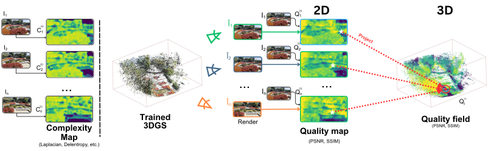
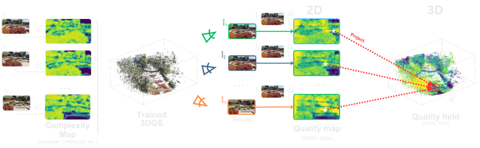
We compare the complexity map of each input view with the quality map of its rendering, then project both onto the Gaussians to obtain complexity and quality fields in 3D.
Q1 Does complexity also tell us where reconstruction fails?
Yes, before any training. Complex regions reconstruct worse, both in the images and on the 3D Gaussians.
In 2D. Within each image, the complex patches are the ones with the highest error.
Image
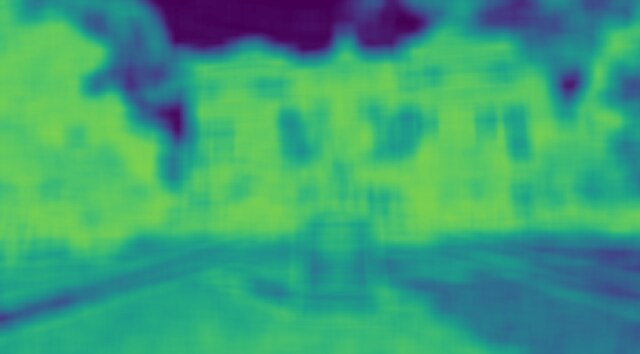
Complexity
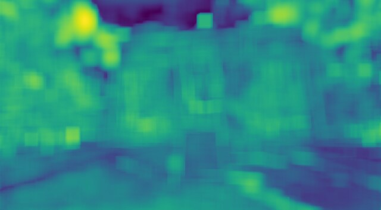
PSNR†
†Inverted colormap, as quality correlates inversely with complexity.
In 3D. Projected onto the 3D Gaussian means, the complexity and quality fields line up across the scene. Drag any view to orbit all three.
RGBComplexityPSNR†
†Inverted colormap, as quality correlates inversely with complexity.
Q2 Does a trained 3DGS put its Gaussians where complexity says?
Only partly. Complex regions get exponentially more Gaussians, but even flat, uniform regions are split into many.
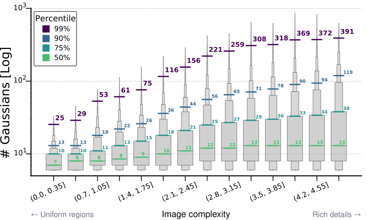
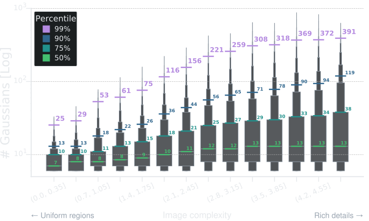
Gaussians per voxel by voxel complexity, across DL3DV scenes (log scale). The steady rise of the percentiles indicates exponential growth.
Q3 Does that capacity survive when we cut the budget?
No. Pruning by opacity down to 0.1% hurts simple regions almost as much as complex ones.
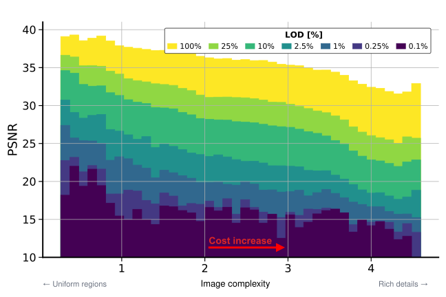
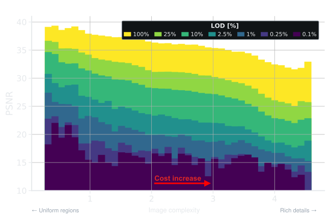
3DGS-MCMC on an indoor scene, pruned by opacity: average PSNR per complexity at each budget. Simple regions lose almost as much quality as complex ones.
Takeaway: complexity marks where reconstruction fails, and it is cheap: computed from the input images alone, before training. Can it decide where Gaussians go, and which to keep?
Method
We learn a single set of Gaussians \(\mathcal{G}\) that can be rendered under any primitive budget \(\tau \in (0, 1]\) by keeping its first \(\lceil \tau N \rceil\) primitives. Each budgeted prefix should stay spatially coherent and degrade gracefully as \(\tau\) decreases. Building on the pilot study, we bring the complexity signal into 3DGS-MCMC with two simple modifications: complexity steers where Gaussians are (re)allocated during training, and a content-aware importance score decides which Gaussians survive at inference, preserving large Gaussians in simple regions. A variance objective keeps errors uniform across budgets.
1
Per-Gaussian complexity
Every Gaussian carries a complexity value, a running average of the image complexity it projects onto.
We augment each Gaussian \(g_j\) with a scalar complexity \(C_j\). After each full capacity training render of view \(i\), the means of the Gaussians inside the frustum are projected onto the precomputed complexity map, and their complexity is updated with an exponential moving average, \(\eta \in (0, 1]\). Over training, \(C_j\) converges to the multi view average used in the pilot study.
2
Complexity-aware densification
Relocation favours complex regions, where reconstruction error concentrates.
3DGS-MCMC relocates Gaussians with a probability proportional to opacity, \(p(g_j) = \alpha_j\), so regions the optimizer has not yet resolved stay under-served. Since complexity is a surrogate for reconstruction error, we bias this sampling towards complex regions, where \(\tilde{C}_j \in [0,1]\) is the min-max normalized complexity.
The exponential mirrors the growth of Gaussian count with complexity found in the pilot study, and the multiplicative form keeps opacity in the loop. To avoid collapsing onto a fixed set of complex regions, we apply complexity dropout, setting \(\tilde{C}_j = 0\) with probability \(\delta = 0.2\).
3
Complexity-aware level of detail
The importance score keeps large Gaussians in simple regions and falls back to opacity in complex ones.
Under a reduced budget only the Gaussians with the highest importance score survive. Ranking by opacity alone degrades simple regions disproportionately, because opacity captures learned contribution but not the spatial footprint a Gaussian covers. We combine opacity, scale, and complexity, where \(s(g_j)\) is the spatial norm of the Gaussian and \(\lambda = 2\).
In complex regions the scale term is attenuated and the score falls back to opacity, which is most reliable where optimization pressure concentrates. In simple regions the score restores weight to large Gaussians that cover broad areas efficiently.
4
Variance objective
Errors at a reduced budget stay spatially uniform, so quality degrades evenly.
During training we sample a budget \(\tau\) at each step. At full capacity the optimizer sees all Gaussians, while at \(\tau < 1\) it sees only the survivors and may pull them away from their full capacity solution. We therefore take the residual between the full and reduced budget reconstruction errors and minimize its spatial variance. The full objective is
with \(\mathcal{L}_{\text{rec}}\) the standard 3DGS L1 + D-SSIM loss.
Results
Explore the budget
Our Gaussians are sorted by importance, so any budget is simply the first part of the file.
Try it. Drag the slider to keep fewer Gaussians.
Across the whole range. To capture quality performance over the whole LoD range, we report the area under each metric’s curve per decade, with ten budgets per decade sampled on a logarithmic scale. With typical scenes of 1–5M Gaussians, each decade matches a different use: [10%, 100%] desktop, [1%, 10%] mobile, and [0.1%, 1%] streaming initialization.
Method
Total [0.1%, 100%]
[0.1%, 1%] (×100)
[1%, 10%] (×10)
[10%, 100%]
PSNR ↑
SSIM ↑
LPIPS ↓
PSNR ↑
SSIM ↑
LPIPS ↓
PSNR ↑
SSIM ↑
LPIPS ↓
PSNR ↑
SSIM ↑
LPIPS ↓
FlexGS
24.77
0.792
0.293
–
–
–
23.36
0.698
0.328
22.43
0.722
0.260
3DGS-MCMC
26.58
0.814
0.213
11.69
0.307
0.559
16.39
0.493
0.395
24.83
0.762
0.168
LightGaussian
26.78
0.820
0.218
14.75
0.438
0.592
19.03
0.596
0.430
24.93
0.762
0.174
MGS
28.65
0.858
0.192
16.45
0.445
0.503
22.27
0.636
0.334
26.25
0.790
0.153
KoalaGS (Ours)
29.09
0.867
0.184
17.55
0.471
0.496
23.20
0.665
0.311
26.59
0.795
0.147
Method
Total [0.1%, 100%]
[0.1%, 1%] (×100)
[1%, 10%] (×10)
[10%, 100%]
PSNR ↑
SSIM ↑
LPIPS ↓
PSNR ↑
SSIM ↑
LPIPS ↓
PSNR ↑
SSIM ↑
LPIPS ↓
PSNR ↑
SSIM ↑
LPIPS ↓
FlexGS
21.89
0.788
0.262
–
–
–
19.82
0.679
0.308
19.91
0.720
0.231
3DGS-MCMC
22.50
0.801
0.212
9.74
0.331
0.561
14.42
0.510
0.406
20.96
0.747
0.166
LightGaussian
22.74
0.802
0.211
10.66
0.376
0.570
15.30
0.534
0.394
21.11
0.745
0.166
MGS
23.59
0.827
0.201
13.67
0.442
0.519
18.28
0.609
0.353
21.62
0.762
0.160
KoalaGS (Ours)
24.02
0.839
0.189
13.83
0.447
0.517
19.05
0.637
0.327
21.98
0.771
0.151
Method
Total [0.1%, 100%]
[0.1%, 1%] (×100)
[1%, 10%] (×10)
[10%, 100%]
PSNR ↑
SSIM ↑
LPIPS ↓
PSNR ↑
SSIM ↑
LPIPS ↓
PSNR ↑
SSIM ↑
LPIPS ↓
PSNR ↑
SSIM ↑
LPIPS ↓
FlexGS
27.47
0.867
0.363
–
–
–
25.28
0.788
0.350
24.94
0.788
0.328
3DGS-MCMC
27.96
0.870
0.274
13.69
0.573
0.497
19.49
0.664
0.378
25.87
0.798
0.231
LightGaussian
28.61
0.888
0.268
16.29
0.650
0.457
21.44
0.730
0.347
26.31
0.809
0.229
MGS
28.95
0.897
0.259
18.81
0.685
0.414
24.62
0.778
0.289
26.30
0.813
0.226
KoalaGS (Ours)
29.51
0.902
0.254
19.19
0.690
0.413
24.86
0.778
0.288
26.83
0.817
0.221
Area under each metric’s curve, per interval, sampled at 30 intervals: 0.1%, 0.2%, …, 1%, 2%, …, 10%, 20%, …, 100%. The two lower intervals scaled by ×100 and ×10 to be comparable. Continuous-LoD methods only. Best in bold, second underlined.
Qualitative comparison across budgets
All methods look alike at full capacity but diverge as the budget shrinks. Ours keeps the scene covered at low budgets and stays close to FlexGS, which cannot be rendered as a prefix.
Qualitatively. Three MipNeRF360 scenes at four budgets.
Each scene at 100%, 10%, 1% and 0.1% of the Gaussians; insets report FPS and PSNR. FlexGS is not prefix-renderable and cannot reach 0.1%. Click to enlarge.
Quantitatively. PSNR, SSIM and LPIPS at fixed budgets, per dataset.
Method
#GS [k]
100%
10%
1%
0.1%
PSNR ↑
SSIM ↑
LPIPS ↓
PSNR ↑
SSIM ↑
LPIPS ↓
PSNR ↑
SSIM ↑
LPIPS ↓
PSNR ↑
SSIM ↑
LPIPS ↓
Octree-GS
2,991
29.16
0.876
0.174
–
–
–
–
–
–
–
–
–
FlexGS
3,012
29.06
0.872
0.217
27.58
0.835
0.293
23.39
0.663
0.494
–
–
–
3DGS-MCMC
3,092
29.80
0.893
0.146
20.58
0.647
0.352
14.14
0.383
0.586
11.06
0.267
0.667
LightGaussian
3,092
29.89
0.897
0.147
21.06
0.669
0.359
15.81
0.475
0.558
13.01
0.377
0.636
MGS
3,092
29.55
0.890
0.151
26.97
0.797
0.280
20.17
0.544
0.521
14.49
0.393
0.620
KoalaGS (Ours)
3,092
29.77
0.893
0.150
27.82
0.822
0.258
21.14
0.566
0.510
16.04
0.459
0.611
Method
#GS [k]
100%
10%
1%
0.1%
PSNR ↑
SSIM ↑
LPIPS ↓
PSNR ↑
SSIM ↑
LPIPS ↓
PSNR ↑
SSIM ↑
LPIPS ↓
PSNR ↑
SSIM ↑
LPIPS ↓
Octree-GS
2,080
24.45
0.860
0.158
–
–
–
–
–
–
–
–
–
FlexGS
1,979
23.78
0.847
0.204
23.06
0.807
0.278
19.49
0.642
0.478
–
–
–
3DGS-MCMC
1,850
24.43
0.866
0.143
18.52
0.670
0.356
11.96
0.404
0.589
8.92
0.306
0.680
LightGaussian
1,850
24.46
0.863
0.146
19.17
0.680
0.347
13.21
0.453
0.596
9.52
0.351
0.686
MGS
1,850
24.40
0.864
0.150
22.16
0.755
0.309
16.66
0.536
0.526
12.10
0.410
0.639
KoalaGS (Ours)
1,850
24.65
0.868
0.150
22.97
0.785
0.277
17.38
0.551
0.519
11.56
0.413
0.660
Method
#GS [k]
100%
10%
1%
0.1%
PSNR ↑
SSIM ↑
LPIPS ↓
PSNR ↑
SSIM ↑
LPIPS ↓
PSNR ↑
SSIM ↑
LPIPS ↓
PSNR ↑
SSIM ↑
LPIPS ↓
Octree-GS
1,457
30.23
0.908
0.254
–
–
–
–
–
–
–
–
–
FlexGS
2,547
29.29
0.898
0.320
29.27
0.897
0.349
24.68
0.824
0.472
–
–
–
3DGS-MCMC
2,950
29.70
0.907
0.236
24.36
0.792
0.362
16.81
0.656
0.520
12.67
0.601
0.599
LightGaussian
2,950
29.73
0.907
0.240
26.21
0.849
0.333
19.59
0.742
0.482
15.26
0.675
0.546
MGS
2,950
29.29
0.905
0.247
28.61
0.888
0.282
23.28
0.800
0.416
16.58
0.692
0.531
KoalaGS (Ours)
2,950
29.92
0.911
0.240
29.05
0.890
0.282
23.40
0.798
0.419
17.81
0.720
0.522
– marks a budget the method cannot reach. Best in bold, second underlined, among full-LoD methods.
Application: Progressive streaming
Because the file is sorted by importance, it can be drawn while it downloads: each slice that arrives adds the next most important Gaussians.
Try it. Pick a link speed and press play.
Disclaimer
This is a simulation of streaming: the file is fetched at your connection's real speed, and each slice is shown when it would have arrived over the chosen link. The scene is stored in the SPZ format with the higher-order spherical harmonics dropped (only first order is kept), and the importance-sorted Gaussians are split into consecutive chunks of 10k, each a standalone SPZ file that is drawn as soon as its bytes arrive.
Time to quality. In the paper’s setup, Bonsai streams over a simulated 50 Mbps link as raw fp32 attributes: 244 bytes per Gaussian (against ~17 in the demo above). Ours reaches 25 dB after 1.5 s, against 2.0 s for MGS and 9.8 s for 3DGS-MCMC. FlexGS resends the full set at every budget: 344 s instead of 49 s.
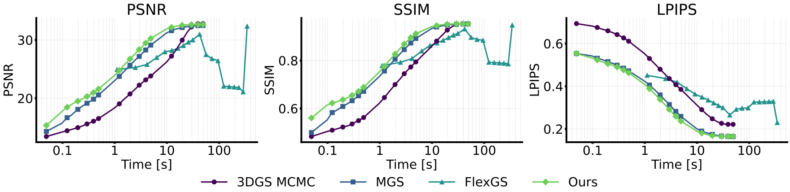
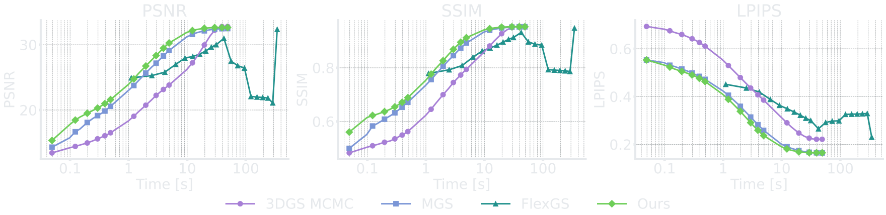
PSNR, SSIM and LPIPS against streaming time (log scale) on Bonsai: 50 Mbps, 244 bytes per Gaussian.
Where does the capacity go?
We group the Gaussians of MipNeRF360 into five complexity bins and follow each bin as the budget shrinks. Our score keeps more of the simple regions and fewer of the complex ones than MGS. Yet quality is higher in every bin and at every budget, including the most complex one, where the gap grows to +2.25 dB at 0.1%: densification places the Gaussians that remain there better.
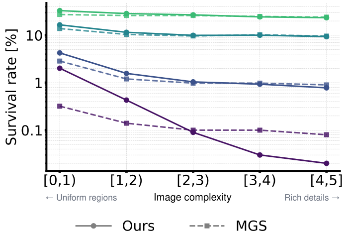
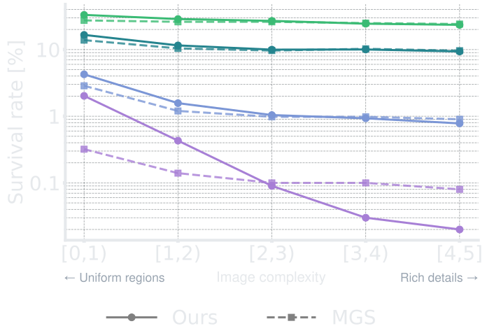
Survival: share of each bin’s Gaussians still kept at a given budget (log scale).
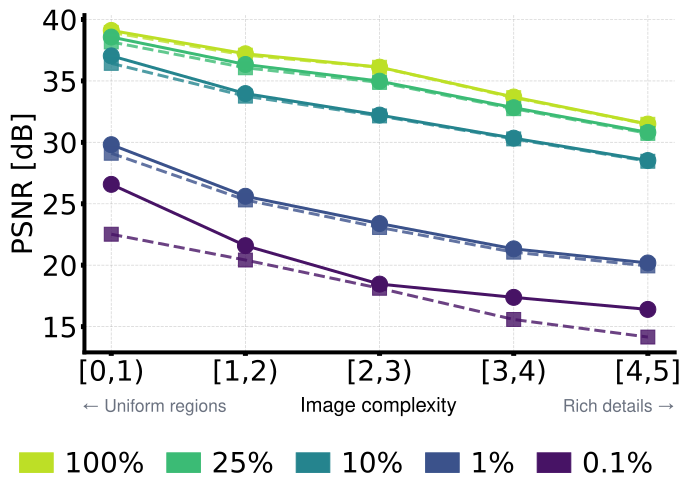
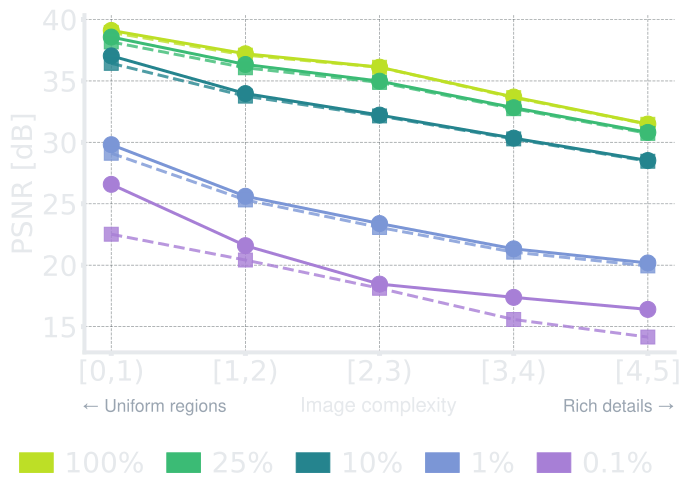
Quality: average PSNR of the Gaussians in each bin.
Rendering speed
Keeping large Gaussians in simple regions has a price at low budgets. A large Gaussian covers more of the screen and costs more to render, so as the budget shrinks our renders speed up less than those of the other methods. At full capacity we remain on par with the other prefix methods, but at 0.1% MGS renders about 1.8× faster indoors and 1.3× faster outdoors, at lower quality. In practice the impact is limited: our slowest setting still renders at over 450 FPS, far beyond real time, and we reach a given quality with fewer Gaussians than MGS. Bounding the screen footprint of large Gaussians at the lowest budgets is a natural next step.
Method
Indoor
Outdoor
100%
10%
1%
0.1%
100%
10%
1%
0.1%
FlexGS*
339
578
833
–
351
609
1,021
–
LightGaussian
300
379
697
1,101
189
435
855
1,364
3DGS-MCMC
300
568
688
732
189
805
1,093
1,177
MGS
302
595
731
829
193
769
1,050
1,151
KoalaGS (Ours)
302
450
475
463
198
649
833
874
Average frame rate on MipNeRF360 on one NVIDIA H100: indoor scenes (Bonsai, Counter, Kitchen, Room) at half resolution, outdoor scenes (Bicycle, Garden, Stump) at quarter resolution. *FlexGS uses a smaller primitive budget, hence its higher speed. Best in bold, second underlined, excluding FlexGS.
BibTeX
The BibTeX is not available yet and will be added soon.
@inproceedings{beche2026koalags,
title = {{KoalaGS}: Complexity-Aware Continuous Level of Detail for Gaussian Splatting},
author = {Beche, Radu and de Charette, Raoul},
booktitle = {Advances in Neural Information Processing Systems (NeurIPS)},
year = {2026}
}
Acknowledgements
This work was supported by the “Romanian Hub for Artificial Intelligence – HRIA”, Smart Growth, Digitization and Financial Instruments Program, MySMIS no. 351416, and by the Astra team, Inria. This work was granted access to the HPC resources of IDRIS under the allocation 2025-AD011017283 made by GENCI on the Jean Zay cluster.